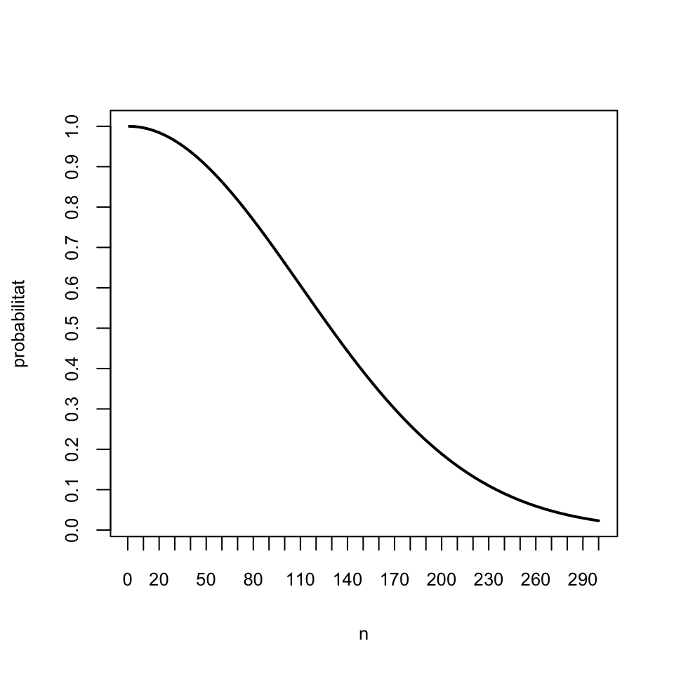
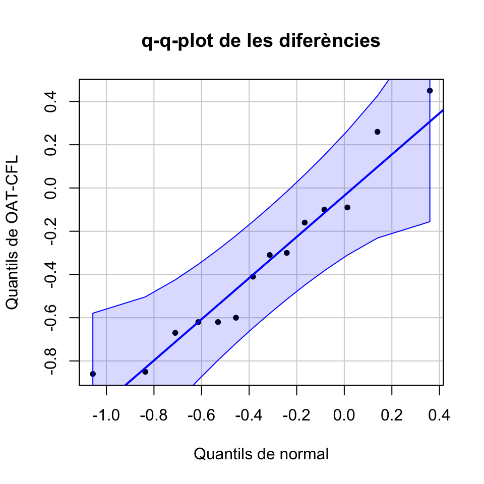

Tema 1 Alguns conceptes bàsics
1.1 Tipus de dades
Els tipus bàsics de dades que consideram en aquest curs són els següents:
Dades qualitatives. Són les que expressen una qualitat, com ara el sexe anatòmic (mascle, femella), el gènere d’una persona (home, dona, lesbiana, gai, bisexual, transsexual, intersexual, asexual, sestosexual…), el tipus de càncer (de mama, de còlon, de pròstata…), l’espècie d’un ésser viu, la soca d’un bacteri o un virus… Si només poden prendre dos valors (per exemple “Sí” i “No”, o “Home” i “Dona”) diem que són binàries o dicotòmiques, depenent del que volguem complicar l’adjectiu.
Les dades qualitatives poden ser iguals o diferents, i no admeten cap altre tipus de comparació.
Dades ordinals. Són dades similars a les qualitatives, en el sentit que expressen una qualitat, però amb la diferència que les ordinals es poden ordenar de manera natural. Per exemple, els nivells de gravetat d’una malaltia (sa, lleu, greu, molt greu, …) o les qualificacions en un examen (suspens, aprovat, notable, excel·lent) són dades ordinals. En canvi, no es poden ordenar de manera significativa les malalties de les persones o les espècies dels animals: per això són dades qualitatives, no ordinals.
Dades quantitatives. Són mesures que són nombres genuïns, “de veritat”, amb els quals té sentit operar, com ara edats, longituds, pesos, temps, nombres d’individus, etc. En distingim dos tipus:
Discretes: Prenen valors que avancen a salts i que podem identificar amb nombres naturals: nombre de germans d’una persona, nombre d’exemplars d’una espècie en una regió, nombre de fulles en una branca…
Contínues: Podrien prendre qualsevol valor real dins d’un interval si es poguessin mesurar amb precisió infinita: longituds, alçades, temperatures, temps…
Exemple 1.1 Hem anotat algunes característiques d’un grup de nins i nines: el nom, l’alçada (en cm), el nombre de germans, el color dels cabells, i el nombre setmanal de refrescs que solen prendre. Hem recollit aquestes dades a la Taula 1.1, on cada filera representa un nin o una nina i cada columna recull una de les característiques que hem anotat:
| Nom | Alçada | Germans | Cabell | Refrescs setmanals | |
|---|---|---|---|---|---|
| 1 | Marta | 135 | 2 | ros | 2-3 |
| 2 | Laura | 132 | 1 | negre | 2-3 |
| 3 | Xavier | 138 | 0 | negre | 0-1 |
| 4 | Joan | 141 | 3 | castany | 4-5 |
| 5 | Maria | 134 | 2 | vermell | 0-1 |
| 6 | Maria | 136 | 1 | castany | 5 o més |
Aleshores:
- Les dades de la columna “Nom” són qualitatives.
- Les dades de la columna “Alçada” són quantitatives contínues.
- Les dades de la columna “Germans” són quantitatives discretes.
- Les dades de la columna “Cabell” són qualitatives.
- Les dades de la columna “Refrescs setmanals” són ordinals.
L’anàlisi, tant descriptiva com inferencial, d’un conjunt de dades és diferent segons el seu tipus. Així, per a dades qualitatives només té interès estudiar i representar les freqüències amb què apareixen els seus diferents valors, mentre que l’anàlisi de dades quantitatives sol involucrar el càlcul de mesures estadístiques, com ara la mitjana o la desviació típica, que expressin numèricament les seves propietats.
Dos punts rellevants a tenir en compte:
No tot nombre és una dada quantitativa. Només els consideram quantitatius quan són nombres genuïns. Per exemple, si demanam a un pacient que qualifiqui el seu dolor amb un nombre natural de 0 a 10, no és una dada quantitativa, sinó ordinal:
No és una mesura precisa del dolor; no són números “de veritat”, sinó abreviatures de “Res”, “Una miqueta”,…, “Matau-me”.
Tenir dolor 6 no significa “tenir el doble de dolor” que tenir dolor 3 (si ho significàs, quin seria el valor corresponent “al doble de dolor” que 6?). En canvi, una persona amb 6 germans sí que en té el doble que una amb 3 germans.
No té sentit sumar-los o operar-los en general. Per exemple, si jo tenc dolor de nivell 6 i tu tens dolor de nivell 5, entre tots dos no tenim dolor de nivell 11. En canvi, si jo tenc 6 germans i tu 5, entre tots dos si que tenim 11 germans.
La distinció discret-continu és purament teòrica. En realitat, tota dada és discreta perquè no podem mesurar res amb precisió infinita, però les eines matemàtiques “contínues” (derivades, integrals, etc.) són molt més potents que les discretes, per la qual cosa sempre que tengui sentit, és convenient considerar una variable com a contínua.
Observau, per exemple, la diferència entre l’alçada mesurada en cm i arrodonida a unitats i el nombre de germans tal i com les hem recollit a la Taula 1.1. Les dues dades es presenten com a nombres naturals, però els nombres de germans no admeten més precisió, mentre que les alçades les podríem mesurar, amb els aparells adequats, en mm, en µm, en nm…. Com que, a més, les eines per a tractar dades contínues són molt més potents, consideram les alçades com a dades contínues, mentre que els nombres de germans no hi ha més remei que tractar-los com a discrets.
En concret, és convenient considerar en la pràctica com a dades contínues aquelles que donen lloc a nombres naturals molt grans, com per exemple el nombre de glòbuls vermells en un litre de sang, de bases nuclèiques en un genoma, o de persones d’un país: la diferència entre 10000000, 10000001, 10000002… pot considerar-se com a contínua: de fet, si prenem el milió com a unitat de mesura, la diferència entre aquests nombres està en la setena xifra decimal: 1.0000000, 1.0000001, 1.0000002.
1.2 Població
En general, una població és simplement un conjunt d’individus o objectes sobre els quals volem conèixer alguna informació.
Una població pot estar perfectament definida en un lloc i temps: per exemple, els habitants d’Espanya just avui. Però normalment la seva definició serà difusa. Si, per exemple, volem estimar alguna cosa sobre una espècie de plantes, de qui estam parlant exactament? De les plantes que estan vives just ara? De totes les plantes d’aquesta espècie de la història del món? Hi hem d’incloure les que encara no han nascut?
Tranquils, no ens trencarem gens el cap amb això. Però almenys heu de ser conscients que una població pot contenir objectes que en realitat no existeixen ni hagin existit ni vagin a existir, sinó simplement que “podrien existir”. Parlarem llavors d’una població virtual (en altres llocs en diuen una població metafòrica).
Per exemple, quan diem que
“La probabilitat que surti cara en llançar una moneda equilibrada és 1/2”,
el que significa és que
“Si prenem la població formada per tots els possibles llançaments individuals de totes les possibles monedes equilibrades, en la meitat dels seus membres el resultat és Cara.”
Els membres d’aquesta població són tots els “possibles” llançaments de monedes equilibrades, els que s’han realitzat al llarg de la història, els que es realitzaran en el futur, i els que es podrien haver realitzat o es podrien realitzar en el futur però en realitat no s’han fet ni s’arribaran a fer mai.
1.3 Variable aleatòria
Una variable aleatòria definida sobre una població \(\Omega\) és simplement una funció \[ X: \Omega\to \mathbb{R} \] que assigna a cada subjecte de \(\Omega\) un nombre real. La idea intuïtiva que hi ha al darrera d’aquesta definició és que una variable aleatòria mesura una característica dels subjectes de \(\Omega\) que varia a l’atzar d’un subjecte a un altre. Per exemple:
Prenem una persona d’una població i mesuram el seu nivell de colesterol, o la seva alçada, o el seu nombre de fills… En aquest cas, \(\Omega\) és la població sota estudi, de la qual prenem la persona que mesuram.
Llançam una moneda equilibrada 3 vegades i comptam les cares que obtenim. En aquest cas, \(\Omega\) és la població “virtual” formada per totes les seqüències de 3 llançaments d’una moneda equilibrada passades, presents, futures i hipotètiques.
Procurau adquirir la disciplina de descriure sempre les variables aleatòries mitjançant una plantilla de l’estil de
“Prenem … i mesuram …”
perquè us quedi clar quina és la població i quina la funció. A més, afegiu-hi les unitats si és necessari. Per exemple:
- \(X\): “Prenem una persona de Mallorca i mesuram la seva alçada (en cm)”.
Fixau-vos que aquesta variable aleatòria no és la mateixa que
- \(Y\): “Prenem una persona de Mallorca i mesuram la seva alçada (en m)”
perquè, encara que totes dues mesuren el mateix sobre els mateixos subjectes, els assignen números diferents. I \(X\) també és diferent de
- \(Z\): “Prenem una persona de Suècia i mesuram la seva alçada (en cm)”
perquè ha canviat la població.
En canvi a
- “Llançam una moneda 3 vegades i comptam les cares”
no hi ha necessitat d’especificar unitats, tret que volgueu emprar una unitat inesperada (jo què sé, que compteu les cares en fraccions de dotzena).
Per a més informació sobre variables aleatòries, consultau la Lliçó 2.
1.4 Mostra
En un estudi inferencial, volem deduir (inferir) informació sobre una o diverses variables aleatòries definides sobre una població a partir d’una mostra:
La població objectiu, o d’interès és el conjunt de subjectes sobre les quals desitjam obtenir informació.
La mostra de la població es el grup de subjectes concrets en els quals mesuram les característiques d’interès, usualment molt petit per comparació amb la població.
Una mostra d’una variable aleatòria és el conjunt de valors obtinguts prenent una mostra de la població i mesurant la variable sobre aquests subjectes.
Figura 1.1: Població versus mostra
Exemple 1.2 Si volem saber si un brou és fat, no ens el bebem tot, perquè ens quedaríem sense brou i ja tant faria si era fat o salat. El que fem és tastar-ne només una cullerada. El brou és la població, la cullarada la mostra.
Exemple 1.3 En un estudi recent es volgué determinar si la llum artificial a la nit afecta el ritme circadià dels ocells cantors. Per fer-ho, s’exposà un grup de 34 ferrericos (Parus major) a diferents intensitats de llum artificial durant la nit i s’anotà com els afectava tant a nivell de comportament com a nivell metabòlic o d’expressió gènica.
Aquí la població d’interès és la formada per tots els ocells cantors (passats, presents i futurs) i la mostra són els 34 pobres ferrericos.
Exemple 1.4 Una sèrie de 10 llançaments d’una moneda equilibrada concreta és una mostra de la població dels “possibles llançaments de monedes equilibrades”.
Si podem mesurar tots els individus de la població, no ens fa falta emprar estadística inferencial per mirar d’endevinar el que volem saber sobre la població: ho mesuram sobre tothom i per avall. Però el més normal és que no poguem mesurar tots els individus de la població.
La població pot ser massa gran. Per exemple, si volem calcular l’alçada mitjana dels europeus que avui tenen 18 anys, és pràcticament impossible amidar-los tots.
Com ja hem comentat, la població pot ser virtual o metafòrica en el sentit que pot contenir membres que en aquest moment ni existeixin. Per exemple, per saber si la llum artificial a la nit afecta els ocells cantors, els autors de la investigació citada a l’Exemple 1.3 no podien accedir a tots els ocells cantors actuals, i molt menys als que ja no són entre nosaltres o als que encara no han nascut.
Pot ser que per obtenir la informació d’un subjecte l’hàgim de sacrificar. En aquest cas, per mesurar tota la població l’hauríem d’exterminar.
Pot ser simplement que sigui difícil accedir a tota la població: per exemple, els estudiants de la UIB són relativament pocs, uns 12000, però seria complicat aconseguir amidar-los tots.
Exemple 1.5 Vosaltres què sou: una població o una mostra? Doncs depèn:
Sou una població quan el que interessa és saber qualque cosa sobre vosaltres i només vosaltres.
Sou una mostra si a partir d’informació sobre vosaltres miram d’inferir informació sobre un grup més gran de subjectes: sobre els estudiants de primer curs de Biologia i Bioquímica d’Espanya, o sobre els estudiants de la UIB d’aquest curs, o sobre els joves europeus, o sobre els mamífers bípedes, o…
En aquest curs sobrecarregarem el terme variable, en el sentit que tendrà dos significats diferents que hauríeu de poder distingir segons el context:
D’una banda, direm variable a una característica que pot prendre diferents valors sobre diferents individus; quan tengui aquest sentit, de vegades li afegirem l’adjectiu poblacional. Per exemple, l’alçada de les persones (de tot el món, d’un país, d’una ciutat…) és una variable poblacional.
D’altra banda, també direm variable a un vector format per una mostra d’una variable poblacional sobre una mostra concreta d’individus. Per exemple, les alçades recollides en la Taula 1.1 formen una variable en aquest sentit.
1.5 Mostreig aleatori
Com ja hem explicat, en un estudi estadístic inferencial, es pren una mostra d’individus d’una població i s’estimen algunes característiques de la població a partir de les de la mostra. Perquè això tengui sentit, és necessari que la mostra sigui representativa de la població. Però, és clar, sense conèixer les característiques de la població, no podem saber si una mostra és representativa o no.
Per sortir d’aquest atzucac, la solució acceptada és prendre una mostra aleatòria, és a dir, triant els seus subjectes a l’atzar i tots amb la mateixa probabilitat de ser escollits. En fer-ho així:
- S’eviten preferències en l’elecció, per la qual cosa esperam que la mostra sigui representativa de la població. Naturalment, això no està garantit: per pura mala sort ens pot sortir una mostra súper rara, és el que té l’atzar. Però almenys hem fet “el que tothom considera que és el que toca” per intentar que sigui representativa.

Figura 1.2: http://dilbert.com/strip/2001-10-25
- Es poden usar tècniques estadístiques per delimitar errors en l’estimació i la seva probabilitat; per exemple, podrem calcular la probabilitat que la nostra mostra sigui súper rara en algun sentit concret.
Exemple 1.6 Per tastar el brou, abans de prendre’n una cullerada el remenam bé. D’aquesta manera esperam que les molècules del brou s’organitzin de manera aleatòria dins l’olla i que la cullerada que en prenguem sigui representativa del brou.
Específicament, el mostreig aleatori consisteix a seleccionar una mostra de la població de manera que totes les mostres de la mateixa mida siguin equiprobables; és a dir, que si fixam el nombre de subjectes de la mostra, tots els conjunts d’aquest nombre de subjectes tenguin la mateixa probabilitat de ser seleccionats.
Hi ha dos tipus bàsics de mostreig aleatori que hem de distingir: amb i sense reposició. Per fixar idees, suposem que disposam d’una població de la qual volem extreure una mostra de mida \(n\).
Una manera de fer-ho seria repetir \(n\) vegades el procés d’escollir, a l’atzar i de manera equiprobable, un individu de la població, anotar qui és i “retornar-lo a la població”, de manera que pugui tornar a ser triat dins la mateixa mostra. El tipus de mostra obtenguda d’aquesta manera rep el nom de mostra aleatòria amb reposició, o mostra aleatòria simple. Observau que amb aquest procediment un mateix individu pot aparèixer diverses vegades en una mostra, i que tots els subconjunts “amb possibles repeticions” (el seu nom tècnic és multiconjunts) de \(n\) individus de la població tenen la mateixa probabilitat d’obtenir-se.
Una altra manera d’extreure la nostra mostra seria repetir \(n\) vegades el procés d’escollir, a l’atzar i de manera equiprobable, un individu de la població, anotar qui és i “retirar-lo de la població”, de manera que ja no pugui tornar a ser triat dins la mateixa mostra. Això és equivalent a extreure de cop \(n\) individus diferents de la població. Aquestes mostres no tenen individus repetits, i qualsevol selecció de \(n\) individus diferents té la mateixa probabilitat de ser l’obtinguda. En aquest cas es parla d’una mostra aleatòria sense reposició.
Quan la mida de la població és MOLT gran per comparació amb la mostra, com sol ser el cas en ciències de la vida, la probabilitat que hi hagi repeticions en una mostra aleatòria simple és molt petita.
Recordau que si una població té \(N\) individus, la probabilitat que una mostra aleatòria simple de mida \(n\) tingui tots els seus membres diferents és \[ \frac{N(N-1)\cdots (N-n+1)}{N^n} \] i per tant la probabilitat que tengui qualque membre repetit és \[ 1-\frac{N(N-1)\cdots (N-n+1)}{N^n}. \] Amb R:
La funció
pbirthday(n,N)ens dóna la probabilitat que en una mostra aleatòria simple de mida \(n\) d’una població de mida \(N\) hi hagi algun element repetit.La funció
qbirthday(p,N)ens dóna la mida mínima d’una mostra aleatòria simple d’una població de mida \(N\) perquè la probabilitat que hi hagi algun element repetit sigui com a mínim \(p\).
El nom birthday fa referència a la paradoxa de l’aniversari: el típic problema de calcular la probabilitat que dos estudiants d’una classe celebrin l’aniversari el mateix dia i sorprendre’s que en una classe de 50 estudiants hi hagi més d’un 95% de probabilitats que hi hagi algun aniversari repetit.
pbirthday(50,366)## [1] 0.97007311-prod((366:(366-49))/366) # Amb la fórmula de la probabilitat## [1] 0.9700731qbirthday per trobar el nombre mínim d’estudiants que hi ha d’haver en una classe perquè la probabilitat que es repeteixi una data d’aniversari arribi al 95%. I comprovau que el valor trobat és correcte.
Per exemple, si triam 100 individus de les Balears (que tenen al voltant de 1,150,000 habitants) a l’atzar permetent repeticions, la probabilitat que surti qualque individu repetit és
pbirthday(100,1150000)## [1] 0.004295221Només en 1 de cada 250 mostres de 100 balears triats a l’atzar permetent repeticions hi hauria qualque repetició.
En canvi, si triam 100 estudiants de la UIB (que té al voltant de 12000 estudiants) a l’atzar permetent repeticions, la probabilitat que surti qualque estudiant repetit és de
pbirthday(100,12000)## [1] 0.3387643En 1 de cada 3 mostres de 100 estudiants de la UIB triats a l’atzar permetent repeticions hi hauria qualque repetició.
Però si triam 10 estudiants de la UIB a l’atzar permetent repeticions, la probabilitat que surti qualque estudiant repetit ja és
pbirthday(10,12000)## [1] 0.003743964Exemple 1.7 El gràfic següent mostra la probabilitat que si prenem una mostra aleatòria simple de mida \(n\) d’una població de 12000 individus, com ara la formada pels estudiants de la UIB, els seus membres siguin tots diferents:
f=function(n,N){1-pbirthday(n,N)}
prob=sapply(1:300,f,N=12000)
plot(1:300, prob, type="l", lwd=2, xlab="n", ylab="probabilitat",
xaxp=c(0,300,30),yaxp=c(0,1,10))
El gràfic següent mostra la mida màxima \(n\) d’una mostra aleatòria simple extreta d’una població de mida \(N\) perquè la probabilitat de repeticions sigui menor que 0.01 (és a dir, perquè més del 99% de les mostres aleatòries simples tenguin tots els seus elements diferents), en funció de \(N\):
fites=sapply(500+100*(0:150), qbirthday, prob=0.01)
plot(500+100*(0:150), fites, pch=20, xlab="N", ylab="n", cex=0.5,
xaxp=c(500,15500,30),yaxp=c(0,20,20))
Així doncs, si la mida de la població és molt gran en relació a la de la mostra, és molt probable que els elements d’una mostra aleatòria simple siguin tots diferents. Això implica que, quan la població és molt gran en relació a la mostra, els mostrejos aleatoris amb i sense reposició són aproximadament equivalents en el sentit següent:
Si la població és molt, molt gran, un mostreig amb reposició donaria gairebé segur una mostra amb tots els seus elements diferents. Per tant, podem prendre directament la mostra sense reposició i suposar que permetíem repeticions, però que no n’hi ha hagut, i que per tant la mostra és simple.
Una mostra aleatòria de 100 individus diferents de les Balears, o de 10 estudiants diferents de la UIB, pot passar perfectament per una mostra presa permetent repeticions, perquè encara que les permetéssim, només obtendríem qualque repetició en 1 de cada 250 mostres com aquesta.
Però en canvi ja és més mal de creure que una mostra aleatòria de 100 estudiants diferents de la UIB hagi estat presa permetent repeticions, perquè si les permetéssim, en 1 de cada 3 vegades sortiria qualcú repetit.
A més, si la mida de la població és molt més gran que \(n\), quan construïu una mostra aleatòria de mida \(n\) escollint els individus un a un a l’atzar sense repeticions, la probabilitat a cada moment d’escollir un individu concret dels que quedin és gairebé la mateixa que si permetéssiu repeticions.
Exemple 1.8 Imaginau que teniu una població de 106 individus i en voleu extreure una mostra aleatòria de 10. Llavors, per exemple, quan ja portau 9 individus escollits, la probabilitat de triar un individu concret dels que queden és \(1/999991=10^{-6}+9·10^{-12}\), mentre que si permeteu que surti qualcun dels ja escollits aquesta probabilitat és \(1/10^6=10^{-6}\).
En resum:
Si prenem una mostra aleatòria sense reposició de mida \(n\) d’una població de mida \(N\) MOLT més gran que n, podem suposar que és una mostra aleatòria simple.
Per fixar una fita, en aquest curs entendrem que \(N\) és prou MOLT més gran que \(n\) com per poder aplicar aquesta regla quan \(N\) és com a mínim unes 1000 vegades més gran que \(n\).
Hi ha un tipus de mostreig aleatori que caldrà tenir present més endavant i volem esmentar ara. Es tracta del mostreig aleatori estratificat. S’utilitza quan la població està classificada en estrats que són d’interès per a la propietat estudiada. Aquests estrats seran grups d’individus definits per una característica concreta, de manera que individus del mateix estrat tenguin aquesta característica en comú i individus d’estrats diferents tenguin aquesta característica diferent. Per exemple: sexes, franges d’edat, zones geogràfiques, subespècies d’una espècie… En aquest cas, es pren una mostra aleatòria (amb o sense repetició) d’una mida prefixada de cada estrat i s’uneixen en una mostra global: el resultat és una mostra aleatòria (amb repetició o sense) estratificada.
Pel que fa a les mides de les mostres de cada estrat, se sol optar per una de les dues estratègies següents:
Imposar que la composició per estrats de la mostra global mantengui les proporcions de la població original, de manera que la mida de la mostra de cada estrat representi el mateix percentatge del total de la mostra que l’estrat corresponent en la població completa.
Prendre les mides de manera que els estrats que representin una fracció molt petita de la població (tan petita que no esperaríem que tenguessin representació en una mostra aleatòria transversal de la població, és a dir, presa del total de la població sense tenir en compte la seva composició en estrats) tenguin una representació en la mostra molt més gran que la que els tocaria.
Per exemple, els estrats podrien ser grups d’edat i podríem prendre la mostra de cada grup d’edat de mida proporcional a la fracció que representa aquest grup d’edat en la població total. O podrien ser els sexes i procuraríem que la nostra mostra estigués formada per un 50% d’homes i un 50% de dones. O, a les Illes Balears, els estrats podrien ser les illes, i llavors podríem imposar que el nombre de representants de cada illa en la mostra fos proporcional a la seva població relativa dins del conjunt total de la comunitat autònoma, o podríem triar la mateixa quantitat d’individus de cada illa, independentment de la seva població.
L’avantatge del mostreig aleatori estratificat respecte del transversal és que, com que l’investigador pren una mostra de cada estrat de la mida que desitja:
Permet estimar la informació d’interès per a cada estrat per separat, com si es tractàs d’estudis independents.
Permet estimar la informació sobre subpoblaciones minoritàries que en una mostra aleatòria transversal apareixerien subrepresentades.
L’inconvenient és que, òbviament, si preneu una mostra amb nombres prefixats i artificials de subjectes de cada estrat, amb aquesta mostra no podeu estimar la proporció de subjectes de cada estrat dins el total de la població. El que volem dir és que si, per exemple, construïu una mostra escollint a l’atzar 100 mallorquins, 100 menorquins i 100 pitiüsos, no la podeu emprar per estimar la proporció de mallorquins en el total de la població de les Balears.
Tenim una població classificada en dos estrats, A i B. La subpoblació A representa un 20% de la població i la B el 80% restant. Hem pres una mostra aleatòria estratificada formada per 100 subjectes de cada subpoblació. Hem mesurat una certa característica X d’aquests subjectes. La mitjana dels valors de X dels subjectes d’A ha donat 5 i la mitjana dels valors de X dels subjectes de B ha donat 10.
(a) Què val la mitjana dels valors de X de tota la mostra de 200 subjectes?
(b) A partir d’aquestes dades, què estimau que val la mitjana de X en el total de la població?
Trobareu més tipus de tècniques de mostreig aleatori i les funcions de R relacionades amb mostrejos a la lliçó sobre mostreig del manual de R.
1.6 Mostres de conveniència
Malgrat que tots els resultats que donarem en aquest curs siguin per a mostres aleatòries i la gran majoria per a mostres aleatòries simples, a la vida real les mostres gairebé mai no ho són, aleatòries: normalment ens hem de conformar amb els subjectes disponibles, que formen una mostra de conveniència. Per exemple, a la UIB, per estimar l’opinió que d’un professor tenen els alumnes d’una classe, només es té en compte les respostes dels estudiants que voluntàriament emplenen l’enquesta d’opinió, que de cap manera formen una mostra aleatòria: el perfil de l’estudiant que contesta voluntàriament una enquesta d’aquest tipus és molt específic i no ve determinat per l’atzar. En aquest cas es tractaria d’una mostra auto-seleccionada.
Un altre tipus de mostres no aleatòries són les oportunistes. Aquest és el cas, per exemple, si per estimar l’opinió que d’un professor tenen els alumnes d’una assignatura es visita un dia la classe i es passa l’enquesta als estudiants que aquest dia assistiren a classe. Un altre cop, pot ser que els alumnes presents no siguin representatius de l’alumnat de l’assignatura (poden ser els més aplicats, o els que no tenen el grip, o els no repetidors).
Les tècniques d’estadística inferencial no es poden aplicar a mostres no aleatòries. Però normalment només podem aconseguir mostres de conveniència. En aquest cas, el que s’ha de fer és descriure detalladament les característiques de la mostra per justificar que, malgrat no ser aleatòria, és raonablement representativa de la població i podria passar per aleatòria.
Exemple 1.9 No perquè sigui oportunista una mostra deixa forçosament de ser vàlida. El nostre exemple preferit és el que podríem titular El cas d’Abraham Wald i els forats que faltaven.
Figura 1.3: Abraham Wald.
Durant la Segona Guerra Mundial es va fer palesa la necessitat de reforçar el blindatge dels bombarders aliats. Però un blindatge excessiu augmentaria el pes del bombarder i faria que consumís més carburant i perdés autonomia de vol o fins i tot que no pogués enlairar-se. Per tant calia blindar només les parts més delicades de l’avió. El problema es passà llavors al Statistical Research Group (SRG), un grup “secret” d’estadístics que assessorava els militars nord americans i que molts historiadors comparen amb el projecte Manhattan, canviant bombes per equacions. Els militars els passaren gràfics dels bombarders que tornaven de missions per Europa amb les marques dels forats de bala que duien. Aquests impactes no estaven uniformement distribuïts pel fuselatge, com podeu veure a l’exemple de la Figura 1.4 que recull els forats d’alguns avions que tornaren d’una missió concreta. La idea dels militars era reforçar les zones més castigades, i el que volien que el SRG els calculàs era quant reforç havien d’afegir a cada zona.
Figura 1.4: Diagrama dels impactes de projectil sobre el fuselatge d’un bombarder en tornar d’una missió.
La resposta d’Abraham Wald, un dels estadístics més brillants del SRG, va ser
“Senyors, on necessiten afegir blindatge és on no hi ha forats, perquè és aquí on eren els forats als avions que no tornaren”
Vaja, que no havien de reforçar les zones amb més impactes: havien de reforçar les zones amb molt pocs impactes. El seu raonament era que els avions rebien els impactes distribuïts de manera uniforme per tot el seu fuselatge. Si els avions que tornaven de les missions eren els que no tenien impactes a determinades zones, o n’hi tenien molt pocs, era segurament perquè els avions que rebien molt càstig en aquestes zones no tornaven. En canvi, els impactes a les zones que mostraven més càstig en els avions que pogueren inspeccionar no impedien que l’avió tornàs. Naturalment, tot això justificat amb un càlcul molt enginyós de la probabilitat que un avió fos abatut en funció del nombre d’impactes de bala rebuts a les diferents zones del fuselatge: enginyós, perquè només podia emprar la informació dels avions que no havien estat abatuts. Si us interessen les butzes matemàtiques del seu treball, les trobareu explicades en aquest article.
El que us volem vendre és que la mostra de bombarders era oportunista: els que retornaven de les seves missions. Però fins i tot d’aquesta mostra es pogué obtenir informació amb les tècniques adients.
1.7 Test de la lliçó 1
(1) Quina, o quines, de les dades següents són quantitatives discretes?
- La pressió arterial sistòlica.
- L’estadi d’un càncer (que s’indica amb un número del 0 al 4)
- El nombre d’ingressos hospitalaris a través d’urgències al llarg d’un dia.
- El nombre de dones en un grup de persones.
- La proporció de dones en un grup de persones.
(2) Quina, o quines, de les dades següents (podem entendre que) són quantitatives contínues?
- La pressió arterial sistòlica.
- L’estadi d’un càncer (que s’indica amb un número del 0 al 4)
- El nombre d’ingressos hospitalaris a través d’urgències al llarg d’un dia.
- El nombre de dones en un grup de persones.
- La proporció de dones en un grup de persones.
(3) En termes estadístics, una població (marcau totes les respostes correctes):
- Només pot estar formada per persones
- Pot ser finita
- Pot ser infinita
- Pot ser qualsevol conjunt de coses en les quals estiguem interessats
- Pot incloure coses que no existeixin
- Les altres respostes són totes falses
(4) En un estudi es volgué determinar el percentatge mitjà d’increment del temps de resposta a un estímul auditiu sota els efectes d’una intoxicació alcohòlica aguda. Per fer-ho, es reclutaren 6 voluntaris, es mesura el seu temps de resposta (en segons) a una sèrie d’estímuls auditius, a continuació se’ls administrà una quantitat alta d’alcohol i es tornà a mesurar el seu temps de resposta als mateixos estímuls auditius. Quina és la variable aleatòria d’interès?
- Prenem una persona, l’intoxicam amb alcohol i mesuram el seu temps de resposta a un estímul auditiu
- Prenem una persona, l’intoxicam amb alcohol i mesuram el seu temps de resposta a un estímul auditiu (en segons)
- Prenem una persona i calculam el seu percentatge d’increment del temps de resposta a un estímul auditiu sota els efectes d’una intoxicació alcohòlica aguda
- Prenem un grup de 6 persones i calculam la mitjana dels seus percentatges d’increment del temps de resposta a un estímul auditiu sota els efectes d’una intoxicació alcohòlica aguda
- Prenem una persona i calculam la diferència (en segons) entre el seu temps de resposta a un estímul auditiu abans i després d’una intoxicació alcohòlica aguda
- El percentatge mitjà d’increment del temps de resposta a un estímul auditiu sota els efectes d’una intoxicació alcohòlica aguda
(5) Què sou vosaltres? Marcau l’única resposta correcta.
- Una mostra aleatòria simple dels estudiants de 1r curs d’algun grau de ciències d’Espanya.
- Una mostra aleatòria sense reposició dels estudiants de 1r curs d’algun grau de ciències d’Espanya.
- Una mostra de conveniència dels estudiants de 1r curs d’algun grau de ciències d’Espanya.
- Cap de les altres respostes és correcta.
(6) Quan diem que una mostra aleatòria d’una població és simple? Marcau una sola resposta.
- Quan la prenem de cop.
- Quan és l’única mostra aleatòria que prenem.
- Quan la prenem de manera que els subjectes no es poden repetir.
- Quan la prenem de manera que els subjectes es poden repetir.
- Quan no és “múltiple”, és a dir, quan no conté subjectes repetits (encara que l’hàgim presa de manera que es puguin repetir).
- Cap de les altres respostes és correcta.
(7) En un mostreig aleatori simple (marcau totes les respostes correctes):
- Cada membre de la població té la mateixa probabilitat de ser triat
- Si tenim els individus de la població ordenats en una llista, no es poden triar dos membres adjacents en aquesta llista
- No es pot estimar la probabilitat que la mostra triada sigui molt diferent del típic en la població
- Cada mostra possible d’una mida donada té la mateixa probabilitat de ser triada
- La decisió d’incloure o no un individu en una mostra depèn només de les característiques de l’individu
- Les altres respostes són totes falses
(8) Els avantatges del mostreig aleatori inclouen (marcau totes les respostes correctes):
- Que es pot aplicar a qualsevol població
- Que permet estimar la probabilitat que la mostra triada sigui molt diferent del típic en la població
- Que no hi ha cap subpoblació els subjectes de la qual tenguin major probabilitat de ser triats
- Que és fàcil de dur a terme
- Que garanteix que la mostra triada serà representativa de la població original
- Les altres respostes són totes falses
(9) En un estudi sobre pacients d’hospitals, es va prendre una mostra aleatòria de 20 hospitals diferents a partir d’una llista de tots els hospitals d’un país. A continuació, es va triar a l’atzar un 10% dels pacients hospitalitzats en un dia concret a cadascun d’aquests 20 hospitals. Quina, o quines, de les afirmacions següents són vertaderes en aquesta situació?
- Tots els hospitals tenen la mateixa probabilitat de ser triats
- Tots els pacients hospitalitzats aquest dia tenien la mateixa probabilitat de ser triats
- Totes les possibles mostres de pacients hospitalitzats aquest dia tenien la mateixa probabilitat de ser triades
- La mostra de pacients va ser estratificada
- Les altres respostes són totes falses
(10) En un estudi sobre pacients d’hospitals, es va prendre una mostra aleatòria de 20 hospitals diferents a partir d’una llista de tots els hospitals d’un país. A continuació, es va triar a l’atzar 10 pacients hospitalitzats diferents en un dia concret a cadascun d’aquests 20 hospitals. Quina, o quines, de les afirmacions següents són vertaderes en aquesta situació?
- Tots els hospitals tenen la mateixa probabilitat de ser triats
- Tots els pacients hospitalitzats aquest dia tenien la mateixa probabilitat de ser triats
- Totes les possibles mostres de 200 pacients hospitalitzats aquest dia tenien la mateixa probabilitat de ser triades
- La mostra de pacients va ser estratificada
- Les altres respostes són totes falses